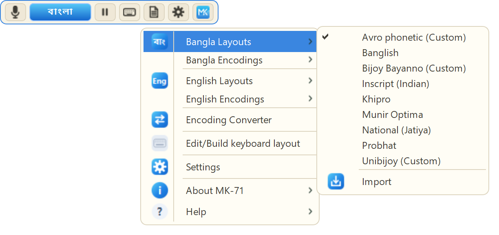

MK-71 Keyboard v1.0.8
টাইপিং হোক সহজ, দ্রুত আর নির্ভুল
Windows ৭–১১-এর জন্য ফ্রি বাংলা + English অন-স্ক্রিন কিবোর্ড · ৩২ ও ৬৪-বিট।
অ্যাপটির পুরো নাম MK-71 Keyboard। অনেকে এটাকে Mk71 Keyboard, mk71 keybord, Mk71-keybord বা MK 71 keyboard লিখেও খোঁজেন — সবগুলোই এই একই অ্যাপ, আর ডাউনলোড সবসময় একই রিলিজ পেজ থেকে হয়।
📥 ইনস্টলেশন
📌 সিস্টেম চাহিদা: ইনস্টল ও নিত্যদিনের ব্যবহার নির্বিঘ্ন হতে হলে আপনার পিসিতে নিচের বিষয়গুলো থাকা দরকার।
অপারেটিং সিস্টেম: Windows 7 SP1, 8.1, 10 বা 11 — ৩২-বিট বা ৬৪-বিট। Windows 7/8.1-এ Visual C++ 2015–2019 runtime আর KB2999226 ইনস্টল থাকতে হবে।
র্যাম: ন্যূনতম ২ GB, ৪ GB হলে আরও ভালো।
ডিস্ক স্পেস: প্রায় ২৫০ MB ফাঁকা জায়গা।
ইন্টারনেট: শুধু ভয়েস টাইপিং আর ঐচ্ছিক AI প্রুফরিডিং-এ লাগে। বাকি সব ফিচার অফলাইনেই চলে।
🔹 ইনস্টলার আর পোর্টেবল — দুটোই একই অ্যাপ। বিল্ডটি কোড-সাইন করা নয়, তাই কিছু অ্যান্টিভাইরাস বা Windows SmartScreen সতর্কতা দেখাতে পারে। ফাইলটি বিশ্বাসযোগ্য মনে হলে More info → Run anyway চাপুন। অ্যাপটি GNU GPL v3.0 লাইসেন্সে ওপেন সোর্স।
💡 ফিচার
দুটো ভাষা, এক অ্যাপ
Avro/ফোনেটিক বা ফিক্সড বাংলা লেআউট, সাথে পূর্ণ English QWERTY — টপ বারের বাটন বা Ctrl+Shift+L দিয়ে বদলান।
৯টি বাংলা লেআউট
Avro phonetic, Banglish, Bijoy Bayanno, Inscript, Khipro, Munir Optima, National (Jatiya), Probhat ও Unibijoy — সাথে নিজের লেআউট Import করার সুবিধা।
এনকোডিং কনভার্টার
ANSI / Bijoy / Probhat লেখা Unicode-এ আর Unicode থেকে ফিরিয়ে — আলাদা কোনো সফটওয়্যার ছাড়াই।
অন্য অ্যাপেও বাংলা
Ctrl+Alt+K চেপে Chrome, Word, Notepad — যেখানে দরকার সেখানেই বাংলা লিখুন।
আনলিমিটেড ভয়েস টাইপিং + AI প্রুফরিডিং
আনলিমিটেড ভয়েস টাইপিং — মাইকে বলুন, লেখা বসে যাবে (Ctrl+Alt+V); ঐচ্ছিক AI বানান-যতিচিহ্ন ঠিক করে, অনুবাদও করতে পারে।
অফলাইন ও প্রাইভেট কাজ চলছে
কোনো ট্র্যাকিং, অ্যাকাউন্ট বা ক্লাউড সিঙ্ক নেই। সেটিংস আর অভিধান আপনার নিজের পিসিতেই থাকে। 🚧 কাজ চলছে — ফিচারটি খুব শীঘ্রই যোগ করা হবে।



📧 সব ব্যবহারকারীর জন্য
MK-71 Keyboard শুরু হয়েছিল একটা ছোট ব্যক্তিগত প্রয়াস হিসেবে — Windows-এ বাংলা লেখার জন্য তিনটি আলাদা সফটওয়্যার ইনস্টল না করেই কাজ চালানো যায়। আজ এটি একটি পূর্ণ বাংলা + English কিবোর্ড: অন-স্ক্রিন টাইপিং, ৯টি লেআউট, এনকোডিং কনভার্শন, ভয়েস টাইপিং আর ঐচ্ছিক AI প্রুফরিডিং — সম্পূর্ণ ফ্রি এবং GNU GPL v3.0-এ ওপেন সোর্স।
🔓 সোর্স কোড: পুরো প্রজেক্ট — সোর্স আর রিলিজ ফাইলসহ — GitHub-এ আছে github.com/Mk4u-Me/mk71-keyboard-এ।
🐛 বাগ রিপোর্ট: কোনো সফটওয়্যারই সম্পূর্ণ ত্রুটিমুক্ত নয়। কোনো সমস্যা হলে Telegram (t.me/mk4u71) বা Mk4ume@proton.me-এ ভרסন, Windows বিল্ড আর কীভাবে সমস্যাটি হচ্ছে লিখে জানান।
📌 অ্যান্টিভাইরাস সতর্কতা: 🚩 বিল্ডটি কোড-সাইন করা না থাকায় কিছু অ্যান্টিভাইরাস ইনস্টলার বা পোর্টেবল জিপ চিহ্নিত করতে পারে। সতর্কতা এলে ফাইলটি আমাদের GitHub রিলিজ থেকে নেওয়া কিনা দেখে নিন, তারপর More info → Run anyway চাপুন।
আপনার মতামত আর সমর্থনেই এই প্রজেক্ট এগিয়ে চলে। MK-71 Keyboard ব্যবহার করার জন্য আর এটিকে আরও নির্ভরযোগ্য করতে সাহায্য করার জন্য ধন্যবাদ।
🦺 ডেভেলপার: K. Mustakim (Mk4u-Me)
🔧 সমাধান
Windows SmartScreen সতর্কতা
বিল্ডটি কোড-সাইন করা নয়, তাই Windows আগে জিজ্ঞেস করে। More info → Run anyway চাপুন।
Ctrl+Alt+K কাজ করছে না
MK-71 Keyboard চালু আছে কিনা (ট্রে আইকন) দেখুন, আর অন্য অ্যাপটি administrator হিসেবে চলছে কিনা — সাধারণ অ্যাপ elevated উইন্ডোতে কী পাঠাতে পারে না।
বাংলা অক্ষর বক্স দেখাচ্ছে
Nirmala UI বা Noto Sans Bengali-র মতো বাংলা ফন্ট ইনস্টল করুন; Windows 7/8.1-এ Visual C++ runtime আর KB2999226-ও লাগবে।
নতুন ভার্সনে আপডেট
নতুন জিপ নামিয়ে একই ফোল্ডারে আনজিপ করুন, তবে data ফোল্ডারটি রাখুন — সেটিংস আর অভিধান হারাবে না।
❓ প্রশ্ন ও উত্তর
বাংলা ও English লেখার একটি ছোট Windows অ্যাপ — অন-স্ক্রিন কিবোর্ড, ৯টি বাংলা লেআউট, এনকোডিং কনভার্টার, ভয়েস টাইপিং আর ঐচ্ছিক AI প্রুফরিডিং একসাথে।
ফ্রি। কোনো অ্যাক্টিভেশন, লাইসেন্স কি বা সাবস্ক্রিপশন নেই; সোর্স GNU GPL v3.0-এ প্রকাশিত।
Windows 7 SP1, 8.1, 10 ও 11 — ৩২-বিট ও ৬৪-বিট দুটোতেই।
না। পোর্টেবল জিপ আনজিপ করে MK-71 Keyboard.exe চালালেই হয় — সেটিংস ওই ফোল্ডারেই থাকে, তাই পেনড্রাইভেও নেওয়া যায়। Start Menu ও Uninstall এন্ট্রিসহ ইনস্টলারও আছে।
৬৪-বিট Windows 10/11: Windows_x64_Portable.zip। পুরোনো ৩২-বিট Windows 7/8.1: Windows_x32_Portable.zip। সেটআপ উইজার্ড চাইলে সংশ্লিষ্ট _Installer.zip।
টপ বারের বাংলা/English বাটন, অথবা Ctrl+Shift+L। অন্য অ্যাপে বাংলা লিখতে Ctrl+Alt+K।
নতুন রিলিজের জিপটি নামিয়ে একই ফোল্ডারে বসিয়ে দিন — সেটিংস data ফোল্ডারে থাকায় কিছুই হারায় না।
📘 নীতি
শর্তের গ্রহণযোগ্যতা: অ্যাপটি ব্যবহার করলে আপনি এই শর্তগুলো মেনে নিচ্ছেন। সম্মত না হলে অ্যাপটি ব্যবহার করবেন না।
ফ্রি ও ওপেন সোর্স: MK-71 Keyboard GNU GPL v3.0-এর অধীনে প্রকাশিত ফ্রি সফটওয়্যার। কোনো পেইড ভার্সন, সিরিয়াল কি বা সাবস্ক্রিপশন নেই।
আপনার ডেটা: সেটিংস, অভিধান আর হিস্টোরি আপনার নিজের পিসিতেই থাকে। আমরা ব্যক্তিগত কোনো ডেটা সংগ্রহ করি না, তৃতীয় পক্ষের সাথে শেয়ারও করি না। ভয়েস টাইপিং ও AI প্রুফরিডিং আপনি ব্যবহার করলেই কেবল ইন্টারনেট লাগে।
সিস্টেম কম্প্যাটিবিলিটি: টেক্সট বসানোর জন্য অ্যাপটি অন্য অ্যাপ্লিকেশনের সাথে যোগাযোগ করে। সিস্টেমের অন্য কোনো প্রোগ্রাম বাধা দিলে বা যোগাযোগে ব্যর্থ হলে অ্যাপ প্রত্যাশামতো কাজ নাও করতে পারে — সেক্ষেত্রে এটি অ্যাপের বাগ নয়, সিস্টেম এনভায়রনমেন্টের সমস্যা।
আমাদের সীমাবদ্ধতা: এটি বাণিজ্যিক পণ্য নয়, আলাদা সাপোর্ট টিমও নেই। প্রতিটি রিপোর্টের উত্তর দেওয়ার চেষ্টা করি, তবে ছোট সমস্যা নিজে সমাধান করাই ভালো; কাছের অভিজ্ঞ কারও সাহায্য নিলে দ্রুত সমাধান মেলে।
পরিবর্তন: ফিচার ও এই শর্ত যেকোনো সময় হালনাগাদ হতে পারে; এই পেজে বা অ্যাপে প্রকাশের সাথে সাথেই সেগুলো কার্যকর হবে।
দায়সীমা: অ্যাপটি কোনো ওয়ারেন্টি ছাড়া “যেমন আছে তেমন” ভিত্তিতে দেওয়া হয়। এটি ব্যবহারে কোনো প্রত্যক্ষ বা পরোক্ষ ক্ষতির জন্য আমরা দায়ী নই।
যোগাযোগ: এই নীতি নিয়ে প্রশ্ন থাকলে Mk4ume@proton.me বা Telegram t.me/mk4u71-এ লিখুন।